This reading is designed for the graduate version of the course. As a result, you may find that the reading is longer and more in-depth than previous readings in the course, and demands more study.
UI Hall of Fame or Shame?
Today's Hall of Fame or Shame example is a feature of Microsoft Office 2007 that gives a preview of what a style command will do to the document while you're mousing over it. Here, the mouse is hovering over the 54-point choice on the font-size drop-down, and PowerPoint is showing what the selection would look like with that new style.
Let's discuss the pros and cons of this approach from a usability point of view.
Today's Goals
This reading continues the stream on research methods. Our last reading in the stream concerned experiment design---how to design controlled experiments to answer a research question. Today's reading is about the second part of that process, how to analyze the data from the experiment to determine the answer to the question. We'll discuss the principles of **hypothesis testing**, which is the basis for analysis. We'll talk about a cheap and easy way to get a feel for your data, by graphing it with error bars, which is not hypothesis testing but is always good practice to do anyway. And we'll discuss two statistical tests commonly used in HCI research: the t test and the ANOVA (Analysis of Variance) test.
This is only a very brief introduction to statistical methods and experiment analysis. There's much more to be said on this topic, which is outside the scope of this class. There are other good MIT classes that cover it in much more depth, particularly 9.07 Statistical Methods in Brain & Cognitive Sciences and 16.470/ESD.756 Statistical Methods in Experimental Design. Also see http://statistics.mit.edu/, a clearinghouse site for classes and research in statistics at MIT.
Hypothesis Testing
Experiment Analylsis
- Hypothesis: Mac menubar is faster to access than Windows menubar
- Design: between-subjects, randomized assignment of interface to subject
| Windows | Mac |
|---|
| 625 | 647 |
| 480 | 503 |
| 621 | 559 |
| 633 | 586 |
Let's return to the example we used in the experiment design reading. Suppose we've conducted an experiment to compare the position of the Mac menubar (flush against the top of the screen) with the Windows menubar (separated from the top by a window title bar).
For the moment, let's suppose we used a **between-subjects** design. We recruited users, and each user used only one version of the menu bar, and we'll be comparing different users' times. For simplicity, each user did only one trial, clicking on the menu bar just once while we timed their speed of access. (Doing only one trial is a very unreliable experiment design, and an expensive way to use people, but we'll keep it simple for the moment.)
The results of the experiment are shown above (times in milliseconds; note that this is fake, randomly-generated data, and the actual experiment data probably wouldn't look like this). Mac seems to be faster (574 ms on average) than Windows (590 ms). But given the noise in the measurements - some of the Mac trials are actually much slower than some of the Windows trials -- how do we know whether the Mac menubar is really faster?
This is the fundamental question underlying statistical analysis: estimating the amount of evidence in support of our hypothesis, even in the presence of noise.
Standard Error of the Mean
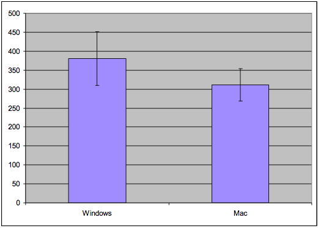
N = 4: Error bars overlap, so can't conclude anything
N = 10: Error bars are disjoint, so Windows may be different from Mac
Let's talk about a simple, rough method for judging whether an experiment might support its hypothesis or not, if the statistics you're using are **means**.
The **standard error of the mean** is a statistic that measures how close the mean statistic you computed is likely to be to the true mean. The standard error is computed by taking the standard deviation of the measurements and dividing by the square root of n, the number of measurements. (This is derived from the Central Limit Theorem of probability theory: that the sum of N samples from a distribution with mean *u* and variance *V* has a probability distribution that approaches a *normal* distribution, i.e. a bell curve, whose mean is *Nu* and whose variance is *V*. Thus, the *average* of the N samples would have a normal distribution with mean *u* and variance *V/n*. Its standard deviation would be sqrt(V/N), or equivalently, the standard deviation of the underlying distribution divided by sqrt(n).)
The standard error is like a region of likelihood around the computed mean - the region around the computed mean in which the *true* mean of the process probably lies. Think of the computed mean as a random selection from a normal distribution (bell curve) around the true mean; it's randomized because of all the uncontrolled variables and intentional randomization that you did in your experiment. With a normal distribution, 68% of the time your random sample will be within +/-1 standard deviation of the mean; 95% of the time it will be within +/- 2 standard deviations of the mean. The standard error is the standard deviation of the mean's normal distribution, so what this means is that if we draw an **error bar** one standard error above our computed mean, and one standard error below our computed mean, then that interval will have the true mean in it 68% of the time. It is therefore a 68% confidence interval for the mean.
To use the standard error technique, draw a bar chart of the means for each condition, with error bars (whiskers) stretching 1 standard error above and below the top of each bar. If we look at whether those error whiskers **overlap** or are substantially different, then we can make a rough judgement about whether the true means of those conditions are likely to be different. Suppose the error bars overlap - then it's possible that the true means for both conditions are actually the same - in other words, that whether you use the Windows or Mac menubar design makes no difference to the speed of access. But if the error bars do not overlap, then it's likely that the true means are different.
The error bars can also give you a sense of the reliability of your experiment, also called the **statistical power**. If you didn't take enough samples - too few users, or too few trials per user - then your error bars will be large relative to the size of the data. So the error bars may overlap even though there really is a difference between the conditions. The solution is more repetition - more trials and/or more users - in order to increase the reliability of the experiment.
Quick Intro to R
- R is an open source programming environment for data manipulation
- includes statistics & charting
- Get the data in
data1 = read.csv(file.choose())
- Compute with it
means = mean(data1)stderrs = sd(data1)/sqrt(nrow(data1))
- Graph it
x = barplot(means, ylim=c(0,800))arrows(x, means-stderrs, x, means+stderrs, code=3, angle=90, length=.1)
R is a good choice for a lot of statistical processing, because it's free and very powerful. A good introduction to R is online at http://cran.r-project.org/doc/manuals/R-intro.html.
Here's how you can use R to create simple bar charts with error bars.
Graphing Techniques
Error bars
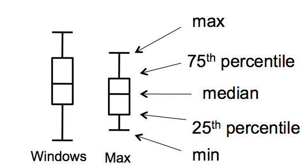
Tukey box plots
- Pros
- Easy to compute
- Give a feel for your data
- Cons
- Not a substitute for statistical testing
Plotting your data is the first step you should do after every experiment, to eyeball your results and judge whether statistical testing is worthwhile, or whether you need more data. It's said that John Tukey, the Stanford statistician who gave his name to one of the statistical tests we'll be talking about, refused to help anybody who hadn't first gone off and plotted their data on a big piece of paper. Tukey's excellent book *Exploratory Data Analysis* introduced the notion of a "box plot" (shown here on the right) which is even richer than a simple bar with error whiskers, showing 5 useful statistics about the spread of each data set in a single graphic. Don't discount the value of your perceptual system for detecting patterns and really *appreciating* the size of effects.
If you want to publish the results of your experiment, you'll need to do some statistical tests as well, like the t tests or ANOVAs we'll talk about in the rest of this reading. But your paper should still have plots with error bars in it. Some researchers even argue that the error-bar plots are more valuable and persuasive than the statistical tests (G.R. Loftus, "A picture is worth a thousand p values: On the irrelevance of hypothesis testing in the microcomputer age," *Behavior Research Methods, Instruments & Computers*, 1993, 25(2), 250--256), though this view is far from universally held.
Be warned that nonoverlapping error bars is only a rough indicator; it does not imply a statistically significant difference (i.e., p < 0.05). For that, you have to actually do the t test or ANOVA test, which is what we'll turn to now. For more explanation, see Harvey Motulsky, ["The link between error bars and statistical significance"](http://egret.psychol.cam.ac.uk/statistics/local_copies_of_sources_Cardinal_and_Aitken_ANOVA/errorbars.htm), 2002; and Dave Munger, ["Most researchers don't understand error bars"](http://scienceblogs.com/cognitivedaily/2008/07/most\_researchers\_dont\_understa\_1.php#more), March 2007.
Hypothesis Testing
- Our hypothesis: position of menubar matters
- i.e., mean(Mac times) < mean(Windows times)
- This is called the alternative hypothesis (also called H1)
- If we're wrong: position of menu bar makes no difference
- i.e., mean(Mac) = mean(Win)
- This is called the null hypothesis (H0)
- We can't really disprove the null hypothesis
- Instead, we argue that the chance of seeing a difference at least as extreme as what we saw is very small if the null hypothesis is true
Our hypothesis is that the position of the menubar makes a difference in time. Another way of putting it is that the (noisy) process that produced the Mac access times is **different** from the process that produced the Windows access times. Let's make the hypothesis very specific: that the mean access time for the Mac menu bar is less than the mean access time for the Windows menu bar.
In the presence of randomness, however, we can't really *prove* our hypothesis. Instead, we can only present evidence that it's the best conclusion to draw from all possible other explanations. We have to argue against a skeptic who claims that we're wrong. In this case, the skeptic's position is that the position of the menu bar makes *no* difference; i.e., that the process producing Mac access times and Windows access times is the same process, and in particular that the mean Mac time is equal to the mean Windows time. This hypothesis is called the **null hypothesis**. In a sense, the null hypothesis is the "default" state of the world; our own hypothesis is called the **alternative hypothesis**.
Our goal in hypothesis testing will be to accumulate enough evidence - enough of a difference between Mac times and Windows times - so that we can **reject the null hypothesis** as very unlikely.
Statistical Testing
- Compute a statistic summarizing the experimental data
- Apply a statistical test
- t test: are two means different?
- ANOVA (ANalysis Of VAriance): are three or more means different?
- Test produces a p value
- p value = probability that the observed difference happened purely by chance
- If p < 0.05, then we are 95% confident that there is a difference between Windows and Mac
Here's the basic process we follow to determine whether the measurements we made support the hypothesis or not.
We summarize the data with a **statistic** (which, by definition, is a function computed from a set of data samples). A common statistic is the mean of the data, but it's not necessarily the only useful one. Depending on what property of the process we're interesting in measuring, we may also compute the variance (or standard deviation), or median, or mode (i.e., the most frequent value). Some researchers argue that for human behavior, the median is a better statistic than the mean, because the mean is far more distorted by outliers (people who are very slow or very fast, for example) than the median.
Then we apply a **statistical test** that tells us whether the statistics support our hypothesis. Two common tests for means are the **t test** (which asks whether the mean of one condition is different from the mean of another condition) and **ANOVA** (which asks the same question when we have the means of three or more conditions).
The statistical test produces a **p value**, which is the probability that the difference in statistics that we observed happened purely by chance. Every run of an experiment has random noise; the p value is basically the probability that the means were different only because of these random factors. Thus, if the p value is less than 0.05, then we have a 95% confidence that there really is a difference. (There's a more precise meaning for this, which we'll get to in a bit.)
Statistical Significance
- Compute a statistic from our experimental data
- X = mean(Win) - mean(Mac)
- Determine the probability distribution of the statistic assuming H0 is true
- Measure the probability of getting the same or greater difference
- Pr ( X > x0 H0 ) one-sided test
- 2 Pr ( X > x0 H0) two-sided test
- If that probability is less than 5%, then we say
- "We reject the null hypothesis at the 5% significance level"
- equivalently: "difference between menubars is statistically significant (p < .05)"
- Statistically significant does not mean scientifically important
Here's the basic idea behind statistical testing. We boil all our experimental data down to a single statistic (in this case, we'd want to use the difference between the average Mac time and the average Windows time). If the null hypothesis is true, then this statistic has a certain probability distribution. (In this case, if H0 is true and there's no difference between Windows and Mac menu bars, then our difference in averages should be distributed around 0, with some standard deviation).
So if H0 is really true, we can regard our entire experiment as a single random draw from that distribution. If the statistic we computed turned out to be a typical value for the H0 distribution - really near 0, for example - then we don't have much evidence for arguing that H0 is false. But if the statistic is extreme - far from 0 in this case - then we can **quantify** the likelihood of getting such an extreme result. If only 5% of experiments would produce a result that's at least as extreme, then we say that we reject the null hypothesis - and hence accept the alternative hypothesis H1, which is the one we wanted to prove - at the 5% significance level.
The probability of getting at least as extreme a result given H0 is called the **p value** of the experiment. Small p values are better, because they measure the likelihood of the null hypothesis. Conventionally, the p value must be 5% to be considered **statistically significant**, i.e. enough evidence to reject. But this convention depends on context. An experiment with very few trials (n<10) may be persuasive even if its p value is only 10%. (Note that a paper reviewer would expect you to have a good reason for running so few trials that the standard 5% significance wasn't enough...) Conversely, an experiment with thousands of trials won't be terribly convincing unless its p value is 1% or less.
Keep in mind that **statistical significance does not imply importance**. Suppose the difference between the Mac menu bar and Windows menu bar amounted to only 1 millisecond (out of hundreds of milliseconds of total movement time). A sufficiently large experiment, with enough trials, would be able to detect this difference at the 5% significance level, but the difference is so small that it simply wouldn't be relevant to user interface design.
mitx:lecture13picoquiz0 Take Picoquiz
Statistical Tests
T test
- T test compares the means of two samples A and B
- Two-sided:
- H0: mean(A) = mean(B)
- H1: mean(A) <> mean(B)
- One-sided:
- H0: mean(A) = mean(B)
- H1: mean(A) < mean(B)
- Assumptions:
- samples A & B are independent (between-subjects, randomized)
- normal distribution
- equal variance
Let's look at some of the more common statistical tests that are used in user interface experiments.
The T test is what you'd use to compare two means in a between-subjects experiment, like the hypothetical Mac/Windows menubar experiment we've been discussing. The T statistic computes the difference between the Mac average and the Windows average, divided by an estimate of the standard deviation. If the null hypothesis is true, then this statistic follows a T distribution (which looks very similar to a normal distribution, a hump centered at 0). You can look up the value of the T statistic you computed in a table of the T distribution to find out the probability of getting a more extreme value.
There are two forms of the T test, with different alternative hypotheses. In the more conservative, **two-sided** T test, your alternative hypothesis is merely that the means are different, so an extreme t value (either positive or negative) counts as evidence against the null hypothesis. The other form is the **one-sided** test, in which your alternative hypothesis expects the difference to go one way or the other - e.g., if there's any difference between Mac and Windows at all, the Mac should be faster. It's conventional to use the two-sided test unless you (and the skeptic you're arguing against) are completely certain which way the difference should go, if the difference exists at all.
Using the T test requires a few assumptions. First, your samples should be independent, so you need to use good experiment design with randomization and controls to prevent inadvertent dependence between samples. Second, the T test also assumes that the underlying probability distribution of the samples (e.g., the access times) is a normal distribution, and that even if the alternative hypothesis is true, both samples have equal variance. Fortunately the T test is not too sensitive to the normality and equal-variance assumptions: if your sample is large enough (N > 20), deviations don't affect it much. There's also an "unequal variances" version of the T test, which uses a slightly different statistic, but with weaker assumptions come less power (i.e., it takes a larger N to reach the same level of significance with the unequal variances T test).
Running a T Test
t.test(data1$win, data1$mac)
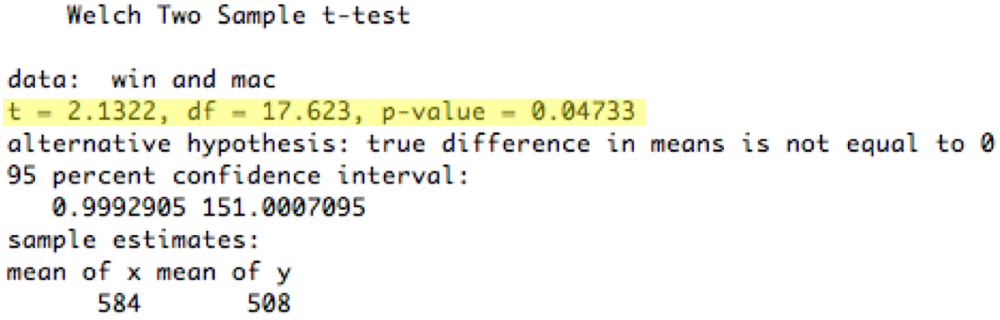
The actual calculation of the t statistic and the proof that it's a valid test are beyond the scope of this course; the statistics courses mentioned earlier cover it. In practice, nobody computes their own t statistic; they use a statistical package to do the computations. So for the sake of this class, we'll focus on understanding **when to use** a t test (that was the last slide), and then how to read the report of the test produced by a stats package.
Running a t test in R to compare two conditions, represented as vectors of numbers, is almost trivial. For more information, look at http://www.statmethods.net/stats/ttest.html
Here's the result of applying the t test (assuming equal variances) to the 10-observation Windows/Mac menubar experiment we've been using.
The most important numbers are highlighted in yellow. T is the actual t statistic value computed from your data. df (**degrees of freedom**) is a measure of the power of the test; it's directly related to the number of observations you have (n-2 in the case of the t test, but other statistical tests have different ways to calculate their degrees of freedom).
Finally, the **p value** for the t test is 0.047, which means that the observed difference between the Windows and Mac menubar is only 4.7% likely to happen purely by chance. Assuming we decided to use a 5% significance level from the outset, we would now say that the difference is **statistically significant** (two-tailed t = 2.13, df = 18, p < 0.05). Often researchers will write just "p<0.05" or "p<0.01" instead of giving the actual p value.
Running a T Test
smalldata = data1[1:4,]t.test(smalldata$win, smalldata$mac)
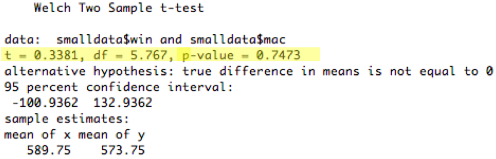
Now let's look at the subset of the data we graphed earlier - just the first four observations for each condition. This will let us see an example of a failing statistical test.
In this case, the two-tailed t test had p value 0.75, which means that the difference in means between the Windows sample and the Mac sample was 75% likely to happen by pure chance even if the Windows and Mac conditions actually had the same true mean (the null hypothesis). That's way too high a chance, so we say that this data showed **no significant difference** between the Windows and Mac menubars (**two-tailed t=0.336, df=6, p=0.75**). The part in parentheses is important when you're writing this result in a paper - it gives the type of statistical test used (two-tailed t), the actual value of the statistic (0.336), the degrees of freedom, and the resulting p value. (Many researchers would omit it for a failing test like this one, but it's essential to include it when the test succeeds).
Using Factors in R
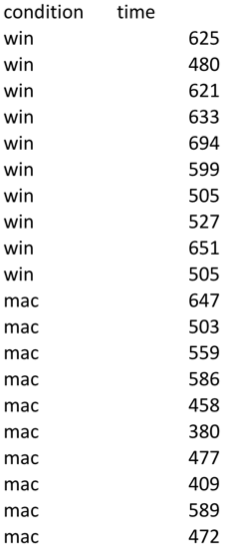
- Instead of representing the win/mac conditions as columns, it's better to represent them by a factor (categorical variable)
data2 = read.csv(file.choose())t.test(data2$time ~ data2$condition)
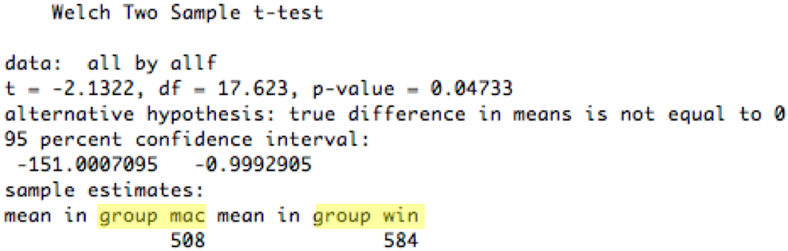
There's another way to run this t test in R, which we'll look at because it introduces an important concept that we'll need for more sophisticated tests in a bit: a **factor**. A factor is a vector of values of a categorical independent variable. In this case, the condition can be either *win* or *mac*, so we first construct a vector of strings (10 "win" and 10 "mac", matching the 20 measurements in the vector *time*), and then convert it from a vector of strings into a factor of enumerated values.
Once we've used a factor to identify the two groups in our t test, we can run the t test against an explicit **model** of the process. That's what *time ~ condition* means: that we believe that the dependent variable time is a function of the (two-valued variable) condition, and we want the t test to test this model against the null hypothesis that time is independent of condition.
Paired T Test
- For within-subject experiments with two conditions
- Uses the mean of the differences (each user against themselves)
- H0: mean(A_i - B_i) = 0
- H1: mean(A_i - B_i) <> 0 (two-sided test)
or mean(A_i - B_i) > 0 (one-sided test)
What if we had run a within-subjects experiment instead? Then we would need to compare each subject with themselves, by computing the difference between each subject's Macintosh access time and the same subject's Windows access time. We would then use a t test for the hypothesis that the mean of these differences is nonzero, against the null hypothesis that the mean of the differences is zero. This test is called a paired t test.
Why is a paired t test more powerful? Because by computing the difference within each user, we're canceling out the contribution that's unique to the user. That means that individual differences between users are no longer contributing to the noise (variance) of the experiment.
Running a Paired T Test (in R)
t.test(data2$times ~ data2$condition, paired=TRUE)
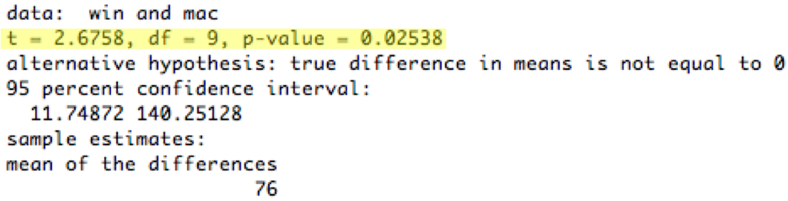
Here's an analysis of a within-subjects menubar experiment. Each subject did a trial on each menubars (counterbalanced to control for ordering effects, so half the subjects used the Windows menubar first and half used the Mac menubar first). The data is ordered by subject, so subject #1's times were 625ms for the Windows menubar and 647ms for the Mac menubar. The t test is actually applied to the differences (e.g., 625 - 647 = -22 for subject 1). The p value for the two-tailed t test is now 0.025, which means that the observed difference between the Windows and Mac menubar is only 2.5% likely to happen purely by chance. So we would be justified in concluding that the difference is statistically significant.
Note the paired=TRUE parameter to t.test; that's what makes R pair up the observations. See http://www.statmethods.net/stats/ttest.html
Analysis of Variance (ANOVA)
- Compares more than 2 means
- One-way ANOVA
- 1 independent variable with k >= 2 levels
- H0: all k means are equal
- H1: the means are different (so the independent variable matters)
So far we've only looked at one independent variable (the menu bar position) with only two levels tested (Mac position and Windows position). If you want to test means when you have more than one independent variable, or more than two levels, you can use ANOVA (short for Analysis of Variance).
One-way ANOVA (also called "single factor ANOVA") addresses the case where you have more than two levels of the independent variable that you're testing. For example, suppose we wanted to test a third menu bar position at the bottom of the screen. Then we'd have three samples: top (Mac), below title (Windows), and bottom. One-way ANOVA can simultaneously compare all three means against the null hypothesis that all the means are equal.
ANOVA works by weighing the variation between the independent variable conditions (Mac vs. Windows vs. bottom) against the variation within the conditions (which is due to other factors like individual differences and random noise). If the null hypothesis is true, then the independent variable doesn't matter, so dividing up the observations according to the independent variable is merely an arbitrary labeling. Thus, assuming we randomized our experiment properly, the variation **between** those arbitrary groups should be due entirely to chance, and identical to the random variation **within** each group. So ANOVA takes the ratio of the between-group variation and the within-group variation, and if this ratio is significantly greater than 1, then that's sufficient evidence to argue that the null hypothesis is false and the independent variable actually **does** matter.
Like the t test, ANOVA also assumes that the samples are independent, normally distributed, and have equal variance.
Running ANOVA (in R)
data3 = read.csv(file.choose())
fit = aov(data3$time ~ data3$condition)summary(fit)
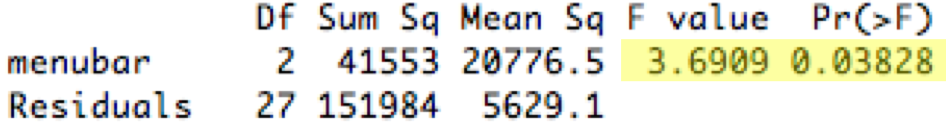
Here's an example of running an ANOVA test. The fictitious experiment here is a between-subjects experiment with three conditions: Windows menubar, Mac menubar, and menubar at bottom of screen. So our condition factor in this dataset now has three different values in it (win, mac, btm). The aov function ("analysis of variance") does the test, and returns an object with the results. If we just display that object directly, however, it doesn't give us the information we want, like the F statistic and the p value. We have to use the `summary()` function to get out the critical stuff. See http://www.statmethods.net/stats/anova.html
Here's how to read the output. **Sum Sq** shows the sum of the squared *deviations from the mean*, which is how ANOVA measures how broadly a sample varies. The residual SumSq shows the deviation of each sample from its group's mean, so the first Windows sample would contribute (625-584.0)^2 to the within-groups SS. The condition SumSq replaces each sample with its group's mean and then uses the deviation of these group means from the overall mean of all samples; so the same Windows sample would contribute (584.0-531.5)^2 to the between-groups SS. **df** is the degrees of freedom of each SumSq statistic, and **Mean Sq** is the mean sum of squared deviations (SS/df). Finally the F statistic is the ratio of the between-groups MS and the within-groups MS. It is this ratio that tells us whether there is more variation *between* the three menubar conditions than within the samples for each (due to other random uncontrolled variables, like user differences). If the F statistic is significantly greater than 1, then the **p-value** (Pr>F) will show significance
In this case, the p value is 0.038, so we say that there is a significant difference between the three menubars (one-way ANOVA, F_{2,27}=3.69, p < 0.05). Note that degrees of freedom for the F statistic are usually shown as subscripts.
It turns out that ANOVA is equivalent to the t test when the number of conditions is 2; in that case, the F statistic used in ANOVA is related to the t statistic simply as F=t2, and you get the same p value from both tests.
Running Within-Subjects ANOVA (in R)
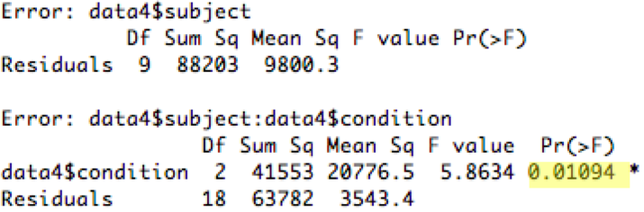
data4 = read.csv(file.choose())fit = aov(data4$time ~ data4$condition + Error(data4$subject/data4$condition))summary(fit)
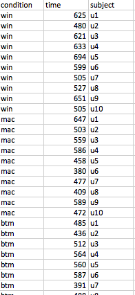
Within-subjects ANOVAs are possible in R, but require more information. First, we need to create a factor for the subject - which subject provided each measurement? That factor now becomes one of the independent variables of the experiment. But when we write the model, we use this factor not as part of the process, but in a special Error term, as shown.
http://www.statmethods.net/stats/anova.html
Tukey HSD Test
- Tests pairwise differences for significance after a significant ANOVA test
- More stringent than multiple pairwise t tests
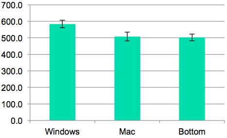
- Be careful in general about applying multiple statistical tests
So the ANOVA test told us that the choice of menubar affects time. But how? By itself the test doesn't say *which* differences are significant. Is Windows significantly worse than the other two, but Mac and Bottom are basically the same? Or are all three different from each other? Graphing with error bars can give a rough answer; it looks like Mac and Bottom are within their error bars of each other, while Windows is beyond. For a statistical test of this question, we can use the Tukey HSD (Honestly Significant Difference) test, which is also sometimes called the Tukey post-hoc test.
Not every stats package can do this test, but there are web sites that do, and the calculation of the Tukey statistic uses data that is already included in an ANOVA report (like the means for each group, the within-group degrees of freedom, and the within-group MS), so it's straightforward. The larger the Tukey statistic is, the better. In this case (for n=10 and df=27), the critical value for 5% significance is roughly 3.5. None of the pairwise comparisons reach that level, so even though we can say that the choice of menubar significantly affected time at a 5% level, we don't have enough evidence to say that the Windows menubar was actually worse at the 5% level.
Why don't we just apply a t test between each pair of conditions? That's a risky thing to do. Statistical testing is only sound when you apply just one test to any given set of data. Roughly speaking, any given test has a 5% chance of lying to you and indicating a significant difference at the 5% level even when there isn't one. (Statisticians call this a "type I error.") The more tests you do, the more likely you are to fall into this trap. This is why you need to choose your statistical tests *before* you collect your data, rather than just dredge around through the data afterwards to see what tests work. Sometimes experimenters *plan* to run multiple tests on the same data; when they do this, however, they use a stricter level of significance than 5% for each test, so that the overall ("familywise") risk of making the type I error is still bounded by 5%. This stricter significance is called "Bonferroni adjustment"; you'll see it in seriously empirical HCI papers from time to time.
The Tukey HSD test is an example of a **post-hoc test**, one that you didn't originally plan to run (because your decision to run it was triggered by the successful ANOVA), and so you didn't adjust your significance level for it. So the Tukey test is designed to be much more stringent than a t test - you need bigger differences in your data to get 5% significance. You may have noticed that the data in all these fake experiments happens to be identical - but where the t test comparing Win vs. Mac was significant, the Tukey HSD test was not.
Tukey HSD Test (in R)
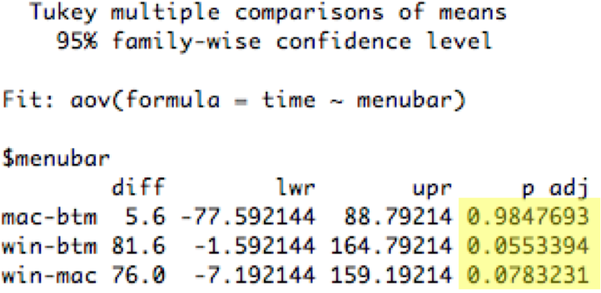
Two-Way ANOVA
- 2 independent variables with j and k levels, respectively
- Tests whether each variable has an effect independently
- Also tests for interaction between the variables
ANOVA can be extended to multiple independent variables, by looking at the variation between different levels of one independent variable (while holding the other independent variable constant). This is **two-way** (or two-factor) ANOVA.
Two-way ANOVA can be used to analyze a within-subjects experiment, where one independent variable is the variable we were testing (e.g. menubar position), while the other independent variable is the user's identity.
This can really only be done in a real stats package like R - Excel and online statistical caluclators don't support multiway ANOVAs. See http://www.statmethods.net/stats/anova.html for more about how to do it in R.
Two-way Within-Subjects ANOVA (in R)
time = [625, 480, ..., 647, 503, ..., 485, 436, ...]
menubar = [win, win, ..., mac, mac,..., btm, btm, ...]
device = [mouse, pad, ..., mouse, pad, ..., mouse, pad, ...]
subject = [u1, u1, u2, u2, ..., u1, u1, u2, u2 ..., u1, u1, u2, u2, ...]
fit = aov(time ~ menubar*device + Error(subject/menubar*device))summary(fit)
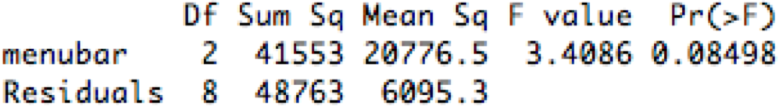
http://www.statmethods.net/stats/anova.html
A Word About Data Format
| time | menubar | device | subject |
|---|
| 625 | win | mouse | u1 |
| 480 | win | pad | u1 |
| 647 | mac | mouse | u1 |
| 503 | mac | pad | u1 |
| 485 | btm | mouse | u1 |
| 436 | btm | pad | u1 |
| 994 | win | mouse | u2 |
Whenever you're working with experimental data, it's good to represent it in a simple tabular format, where each row represents a single *sample* (a measurement of a dependent variable) along with all the conditions and settings that led to that measurement (the settings of the independent variables). A spreadsheet like this, or a table in comma-separated-value (CSV) format, is your best bet. You'll be able to load a CSV file easily into R, and use the columns as data vectors.
Other Tests
- Two discrete-valued variables
- "does past experience affect menubar preference?"
- independent var {WinUser, MacUser}
- dependent var {PrefersWinMenu, PrefersMacMenu}
- contingency table
| PrefersWin | PrefersMac |
|---|
| WinUser | 25 | 9 |
| MacUser | 8 | 19 |
- Fisher exact test and chi square test
- Two (or more) scalar variables
The t test and ANOVA are designed for cases where your independent variable is **discrete-valued** (e.g. two or three menubar conditions) and your dependent variable is a **scalar** quantity (in fact, a normally distributed scalar). This is very common, but other kinds of variables sometimes appear in UI experiments.
When both variables are discrete-valued, you end up visualizing your data as a table of occurrence frequencies (called a contingency table) rather than a bar graph. There are two statistical tests for this kind of relationship: the Fisher exact test works best when the numbers are small (some frequencies in the table are less than 10) and the table is 2x2 (i.e., each variable has only two possible values). It can be computed for larger table sizes, but not by hand. The chi-square test is more suitable for large table dimensions, and when the frequencies in each cell are big enough (all greater than 5). Excel doesn't have these tests, but the web does.
When both variables are scalar, the right tool is regression. If our menubar experiment varied the starting distance from the menu, for example, and measured the time to access, then we might use regression to "fit a model" to the data that actually *quantifies* the relationship between these two variables - i.e., that time varies with the log of starting distance. Regression can do this fitting, and tell us how well the model fits the data (the analog of statistical significance for hypothesis testing) as well as the constant factors of the relationship. Regression is beyond the scope of this class (get it in a statistical methods course), but you'll see it from time to time in empirical HCI papers, particularly work on low-level input like Fitts's Law.
Summary
- Graphing with error bars is cheap and easy, and great for getting a feel for data
- Use statistical tests to establish significance of observed differences
- Use t test to compare two means
- Use ANOVA to compare 3 or more means